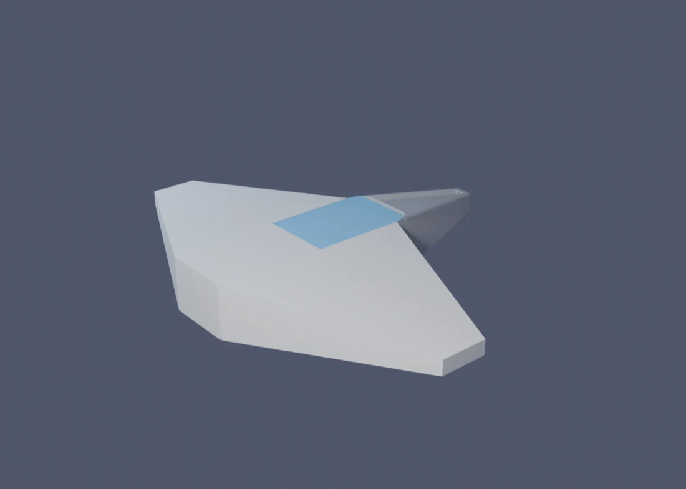
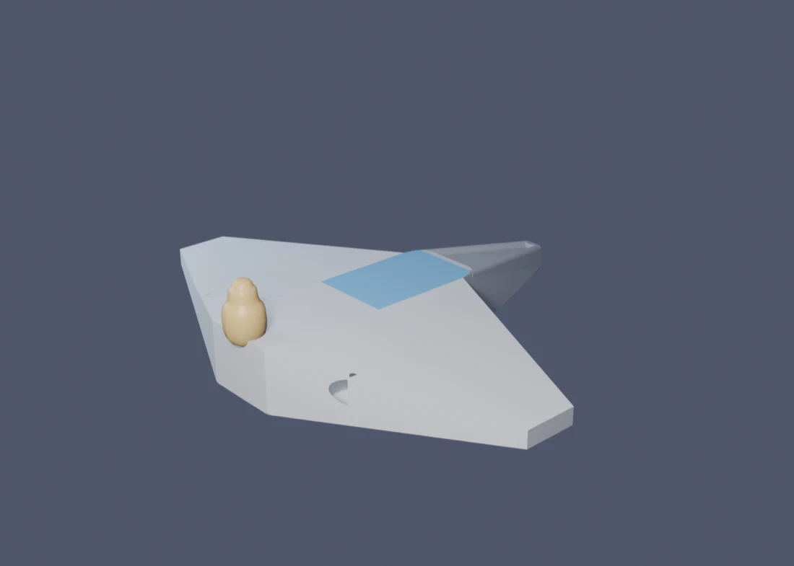
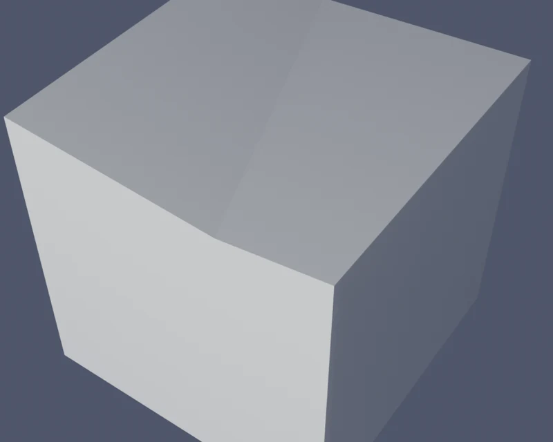
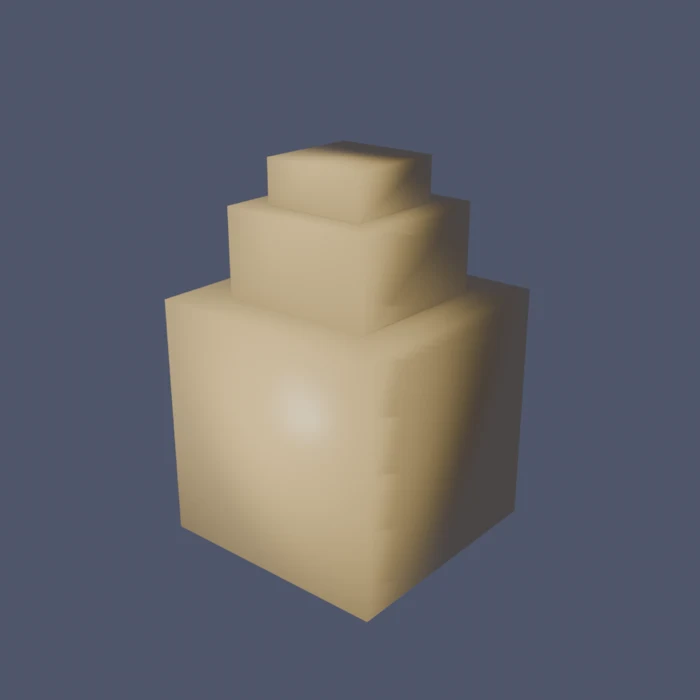
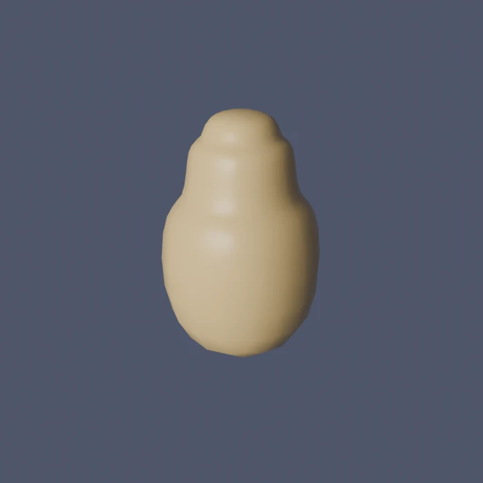

// Block 2 of 10 · 4–5 sessions
Extended toolkit and detailing
Knife, Subdivision Surface, Boolean and Merge: asymmetric forms and assembly from parts.
- Duration
- 2–3 sessions · ~2 h each
- Checkpoint
- Your object from block 1, refined and assembled from several parts.
- Challenge
- The same model with a moving part (lid, door, turret) — a separate object with its own origin.
#The idea of the block
The five tools of block 1 are deliberately limited — so the first session is guaranteed to give a result. But they have a limit: all they can make are forms symmetrical about one axis, with details that “stick out”. Block 2 lifts that limit with three new tools:
- Knife — cut the mesh freely, not only with loops across the form;
- Subdivision Surface — smooth an angular form into an organic one in a controlled way;
- Boolean and Merge — join separate parts into one model instead of only building on from one piece.
The through-line example of this block is the same ship as in block 1, not a new object. That is deliberate: real modeling work rarely stops at the first blockout — it comes back to an already-finished object again and again, adding a new layer of detail with new tools each time. Below is what the block-1 ship becomes after sessions 4 and 5: an uneven seam on the hull (Knife), a dome on the stern, built separately and smoothed (Subdivision Surface), a vent hole cut with Boolean, and the dome itself attached to the hull with Merge.


#Session 4 — Knife and Subdivision Surface
| Tool | What it does | Example |
|---|---|---|
| Knife K | cuts the mesh along any line right across the model’s surface | an uneven hull-panel seam across the fuselage |
| Subdivision Surface (modifier) | smooths an angular “cage” into an organic form | an angular block dome → a smooth streamlined dome |
Knife (K) cuts the mesh along any line you draw with the mouse right across the model’s surface. Unlike Loop Cut, the line doesn’t have to be a straight loop around the whole form. With it you can cut an uneven seam, a hull panel, a scar, a triangular dent.
Subdivision Surface adds smoothness. Look at two contrasting examples:
- an organic creature or a character’s head: an angular blockout → a smooth form with one modifier;
- a spaceship hull with crisp engineered edges: here smoothness “eats” the design, so Subdivision isn’t needed.
Control the smoothing level (Levels Viewport / Render) and keep the effect as a modifier — then you can keep editing the rough “cage” instead of “baking” the result into the geometry right away.
#Each tool a bit closer up
- Knife (K). Click to add points of the cut line one by one; Enter or a double click finishes the cut. By default the line “snaps” to existing edges — to cut freely, without snapping, hold C. If the cut needs to go all the way through the form, not just the side facing the camera, press X while cutting to turn on Cut Through.
- Subdivision Surface. Modifier Properties (the wrench icon) → Add Modifier → Generate → Subdivision Surface. Two level fields: Viewport (how much you see while working — keep it small, 1–2, or the viewport starts to lag) and Render (how much is computed in the final frame — here you can go higher). Protect edges that must stay sharp either with an extra loop right next to them (Loop Cut), or by setting an Edge Crease right on the edge (Shift+E, drag with the mouse) — the extremes 0 and 1 mean “ordinary edge” and “fully rigid, Subdivision leaves it alone”.
#A worked example: two new layers on the same ship
Continuing the same ship. Both of this session’s tools show up clearly on two separate spots on the model — that makes it easier to see the effect of each one on its own before mixing them.
A hull seam — Knife. On the top face of the fuselage (the same one where a Loop Cut ran in block 1), draw a Knife cut on the diagonal — not straight along the loop, but at an angle, like a real hull-panel seam that isn’t afraid of looking “imperfect”. The cut line by itself gives no visible relief yet — Knife only adds an edge to the mesh. To actually make the seam read on the silhouette, there’s one more step: in Edit Mode select the new cut vertices and nudge them down a little (G → Z → a small negative number) — now there’s a height difference on either side of the seam, not just a line on a flat face, and light reacts to it.

A dome — Subdivision Surface. Instead of cutting a dome straight into the hull, make it a separate object — a direct bridge to session 5, where separate objects are exactly what get joined together. The starting shape is a cube, turned through Inset and Extrude (tools you already know from block 1) into a stepped block, like a small ziggurat. On its own it’s angular:


One modifier, and the same object, with the same proportions, suddenly looks like a cast part instead of a pile of cubes. That’s exactly the point of the warning at the start of the block: the “after” shape isn’t magic — it’s a direct continuation of the “before” shape; whatever is built into the angular cage (where exactly the Insets are, how the steps are arranged) decides where the smoothed surface flows.
#Session 5 — Boolean, Merge and assembling from parts
| Tool | What it does | Example |
|---|---|---|
| Boolean (modifier) | cuts out or adds volume in the shape of another object | a cylinder cuts a round vent hole in a hull side |
| Merge Ctrl+J / M | joins separate objects into one, then welds the vertices at the seam | the dome from session 4 gets attached to the hull |
Ask yourself: is there a part of my model that’s easier to make separately and attach than to pull out of the same solid form? A wheel, a tower, a barrel, a handle — and the dome you just built in session 4 — that is the topic of the session.
- Merge — two separate actions that are easy to mix up. First, Object → Join (Ctrl+J) in Object Mode: select the part, then, holding Shift, the main object; whichever you click last becomes the “main” one and absorbs the rest into one mesh. After that, the part and the hull are already one object, but doubled-up vertices can be left where they meet. The second step is, in Edit Mode, select everything (A) and M → By Distance: vertices lying closer than a set threshold get merged into one.
- Boolean (a modifier) cuts out or adds volume in the shape of another object: for example, a cylinder “cuts” a round hole in a body. More powerful but more fragile: it often leaves a messy mesh. Treat it as a tool “for a quick result”, not the standard workflow.
#Each tool a bit closer up
- Boolean. Modifier Properties → Add Modifier → Generate → Boolean → Operation: Difference cuts (the “knife” object removes everything it overlaps), Union merges both volumes into one with no internal walls, Intersect keeps only the shared part. The Object field is the “knife” itself: pick the helper object (a cylinder, a sphere) you’re cutting with. The Solver field: Exact is slower but more reliable — make it the default; Fast is quicker but more often leaves broken geometry on complex intersections. After you Apply the modifier the helper “knife” object isn’t needed anymore — hide it (H) or delete it, it no longer affects the result.
- Merge. The M menu has a few options: At Center collapses the selected vertices to one point — the exact midpoint between them; At Last collapses them to the position of the last-selected vertex (handy when you need to keep exactly that position); By Distance automatically welds every pair of vertices closer than a set threshold, without you having to select pairs by hand. For the seam between two objects you just joined, By Distance is usually the fastest and most reliable choice.
#A worked example: a vent and a dome on the same ship
A vent hole — Boolean. Add a cylinder on the side of the hull, oriented across the hull plating — this is the future “knife”. A Boolean modifier on the hull: Operation → Difference, Object → the cylinder you just added, Solver → Exact. The viewport immediately shows a round hole wherever the cylinder crosses the plating. Once the shape and position look right, Apply the modifier to bake the hole into the hull’s geometry, and the “knife” cylinder can be hidden or deleted.
Attaching the dome — Merge. Slide the dome from session 4 (already carrying its own Subdivision Surface) up against the stern, flush with the hull. Select the dome first, then, holding Shift, the ship itself — the last click decides which object is “main” and absorbs the rest. Ctrl+J joins them into one object. In Edit Mode select everything (A) and M → By Distance to weld the vertices where the dome touches the hull — skip this step and the seam stays two separate, barely-overlapping meshes, which shows up as a thin gap on close inspection, or as a problem later, in Block 7 (export).
#Common problems
| Problem | Why it happened | The fix |
|---|---|---|
| The Knife cut is in the mesh, but nothing looks different | The cut line sits in the same plane as the rest of the face — there’s no angle to see or to chamfer | Select the new cut vertices and move them (Extrude or G along an axis) — visibility comes from a height or angle difference, not from the cut existing |
| Subdivision Surface inflates or squeezes a form where it should be sharp | There are no supporting loops near the edge that must stay crisp | Add another Loop Cut right next to the edge, or set an Edge Crease on it |
| After Boolean the model has holes or stray faces | The objects intersect ambiguously, or transforms weren’t applied beforehand | Object → Apply → All Transforms on both objects before Boolean; try another Solver (Exact) in the modifier |
| M doesn’t offer to join two different objects | The Merge menu only works on vertices inside ONE object in Edit Mode — two separate objects need Object → Join first | First Ctrl+J in Object Mode, and only then go into Edit Mode for M → By Distance |
| Merge by Distance doesn’t join vertices that look like they’re in one spot | The distance threshold is too small, or the vertices really are slightly apart | Increase the distance in the Merge by Distance field, or select the vertices by hand and join them with M → At Center |
#Before the session
- The file with your object from block 1 (saved and accessible: from the cloud or a flash drive) — sessions 4 and 5 continue that same file, not a fresh start.
- Think about which part of your model is worth making separately: that is the main question of session 5.